Tecnología que Transforma
Resultados en el Campo
Tecnologia que Transforma
Resultados no Campo
Mapeo satelital, muestreo inteligente, IA propia y prescripción variable para maximizar cada hectárea de tu operación agrícola. Mapeamento satelital, amostragem inteligente, IA própria e prescrição variável para maximizar cada hectare da sua operação agrícola.
Cómo Trabajamos Como Trabalhamos
5 pasos para transformar tu operación agrícola con tecnología de precisión 5 passos para transformar sua operação agrícola com tecnologia de precisão
Diagnóstico Satelital Diagnóstico Satelital
Evaluamos su campo mediante imágenes satelitales multibanda para identificar zonas de manejo y variabilidad. Avaliamos seu campo por meio de imagens satelitais multibanda para identificar zonas de manejo e variabilidade.
Muestreo de Campo Amostragem de Campo
Colecta georreferenciada con PIX Muestreo, optimizando puntos por zona de manejo. Coleta georreferenciada com PIX Muestreo, otimizando pontos por zona de manejo.
Análisis con IA Análise com IA
Algoritmos propios procesan datos satelitales y de campo para generar recomendaciones precisas. Algoritmos próprios processam dados satelitais e de campo para gerar recomendações precisas.
Prescripción VRT Prescrição VRT
Mapas de aplicación variable listos para su maquinaria, optimizando insumos por zona. Mapas de aplicação variável prontos para sua maquinaria, otimizando insumos por zona.
Monitoreo Continuo Monitoramento Contínuo
Seguimiento satelital mes a mes para evaluar resultados y ajustar estrategias. Acompanhamento satelital mês a mês para avaliar resultados e ajustar estratégias.
Agricultura de Precisión con Tecnología Propia Agricultura de Precisão com Tecnologia Própria
En Pixadvisor combinamos imágenes satelitales, inteligencia artificial y conocimiento agronómico para entregar soluciones que realmente impactan la productividad de tu campo. Operamos en Bolivia y Brasil, con experiencia en 11 cultivos diferentes. Na Pixadvisor combinamos imagens satelitais, inteligência artificial e conhecimento agronômico para entregar soluções que realmente impactam a produtividade do seu campo. Operamos na Bolívia e no Brasil, com experiência em 11 cultivos diferentes.
Nuestra plataforma integra desde el diagnóstico satelital hasta la prescripción variable, pasando por muestreo georreferenciado y análisis con IA. Todo en un ecosistema diseñado para el agricultor moderno. Nossa plataforma integra desde o diagnóstico satelital até a prescrição variável, passando por amostragem georreferenciada e análise com IA. Tudo em um ecossistema projetado para o agricultor moderno.
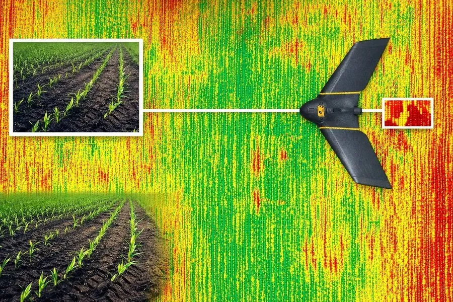
Nuestros Servicios Nossos Serviços
Soluciones integrales de agricultura de precisión adaptadas a tu operación Soluções integrais de agricultura de precisão adaptadas à sua operação
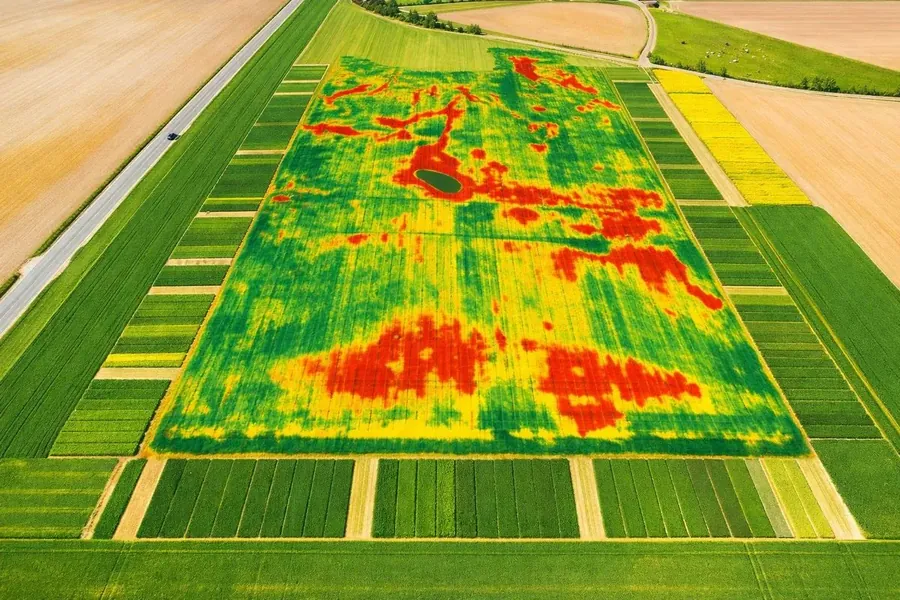
GeoLand Advisor
Delimitación y mapeo de lotes agrícolas con imágenes satelitales de alta resolución y clasificación de zonas productivas. Delimitação e mapeamento de lotes agrícolas com imagens satelitais de alta resolução e classificação de zonas produtivas.
Ver más Ver mais →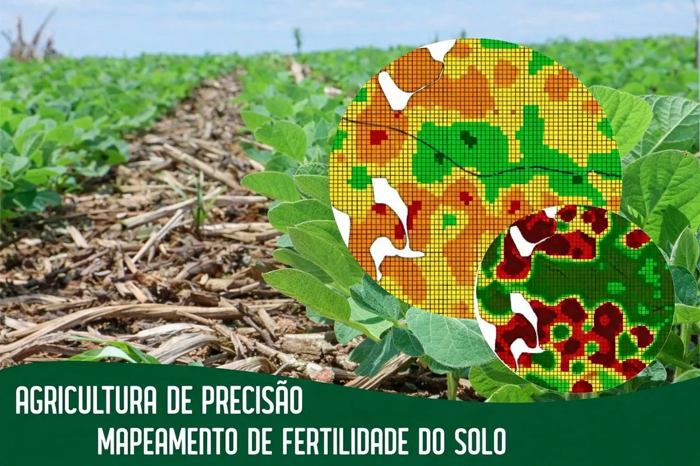
SmartSoil Advisor
Mapeo de fertilidad del suelo con interpolación geoestadística y generación de zonas de manejo para fertilización diferenciada. Mapeamento de fertilidade do solo com interpolação geoestatística e geração de zonas de manejo para fertilização diferenciada.
Ver más Ver mais →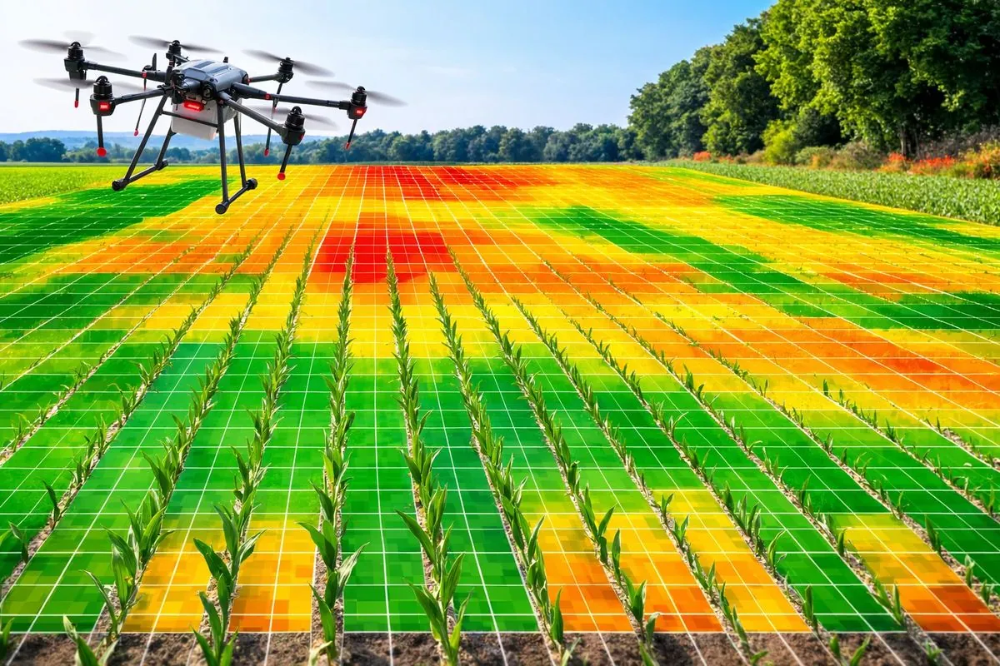
CheckSoil Advisor
Diagnóstico integral del suelo con muestreo dirigido por zonas, análisis de laboratorio y recomendaciones de enmiendas. Diagnóstico integral do solo com amostragem dirigida por zonas, análise de laboratório e recomendações de correção.
Ver más Ver mais →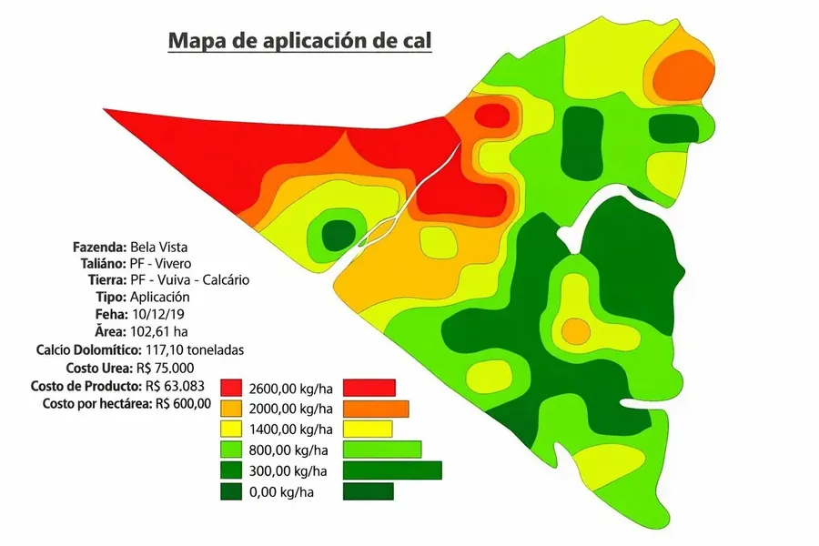
NutriBank Advisor
Prescripción nutricional variable con mapas VRT para fertilización, encalado y enmiendas, optimizando costos por hectárea. Prescrição nutricional variável com mapas VRT para fertilização, calagem e correção, otimizando custos por hectare.
Ver más Ver mais →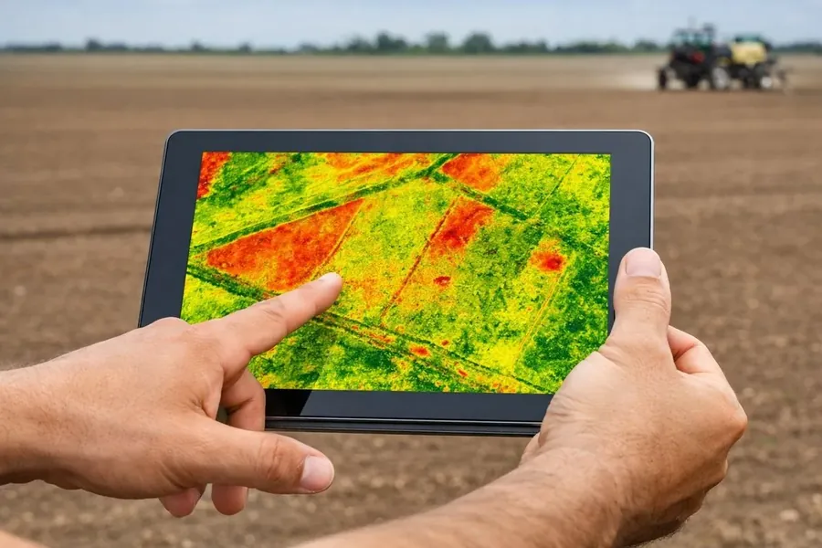
BioIndex Advisor
Monitoreo de salud vegetal con índices NDVI, NDRE, SAVI y series temporales para detectar estrés antes de que sea visible. Monitoramento de saúde vegetal com índices NDVI, NDRE, SAVI e séries temporais para detectar estresse antes que seja visível.
Ver más Ver mais →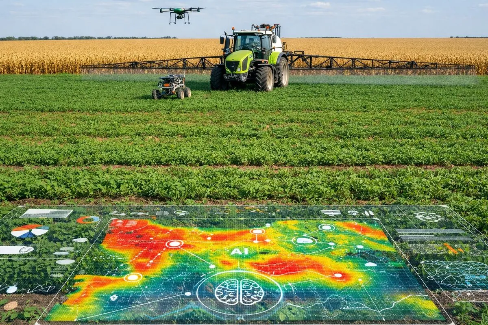
WaterSoil Advisor
Análisis de balance hídrico, mapeo de humedad del suelo y recomendaciones de riego con datos satelitales y de campo. Análise de balanço hídrico, mapeamento de umidade do solo e recomendações de irrigação com dados satelitais e de campo.
Ver más Ver mais →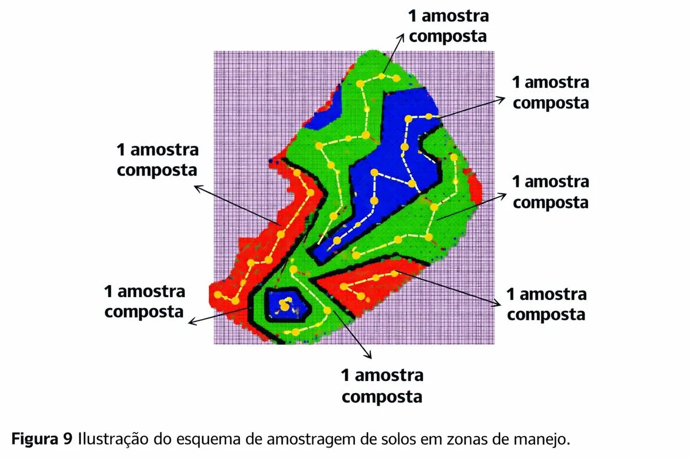
CheckLeaf Advisor
Diagnóstico foliar georreferenciado con interpretación nutricional y correlación con índices de vegetación satelitales. Diagnóstico foliar georreferenciado com interpretação nutricional e correlação com índices de vegetação satelitais.
Ver más Ver mais →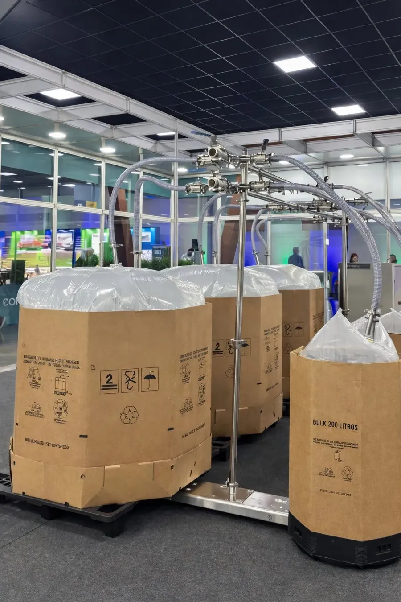
OnFarm Biofábricas
Producción on-farm de biocontroladores y biofertilizantes con monitoreo digital y protocolos de calidad integrados. Produção on-farm de biocontroladores e biofertilizantes com monitoramento digital e protocolos de qualidade integrados.
Ver más Ver mais →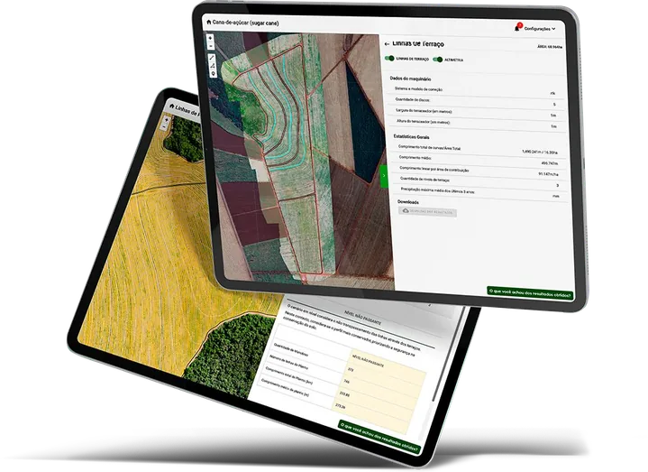
FieldPlanning
Generación automática de escenarios de líneas de plantación, terraza y pulverización. Algoritmos que consideran altimetría, declividad, lluvia y maquinaria. Geração automática de cenários de linhas de plantio, terraço e pulverização. Algoritmos que consideram altimetria, declividade, chuva e maquinário.
Ver más Ver mais →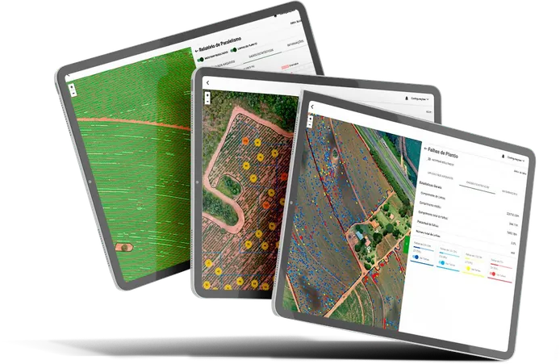
FieldControl
Restitución automática de líneas, detección de fallas de plantío, análisis de paralelismo y conteo de plantas. Reduce pisoteo y optimiza cosecha mecanizada. Restituição automática de linhas, detecção de falhas de plantio, análise de paralelismo e contagem de plantas. Reduz pisoteio e otimiza colheita mecanizada.
Ver más Ver mais →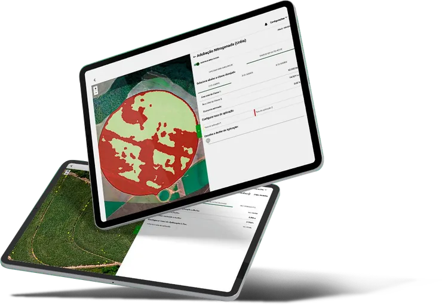
FieldMetrics
Detección de malezas con IA, mapeo para aplicación a tasa variable de herbicidas, regulador de crecimiento, defoliante y urea. Ahorro de hasta 80%. Detecção de plantas daninhas com IA, mapeamento para aplicação a taxa variável de herbicidas, regulador de crescimento, desfolhante e ureia. Economia de até 80%.
Ver más Ver mais →Resultados Reales Resultados Reais
Lo que dicen nuestros clientes sobre el impacto en sus operaciones O que nossos clientes dizem sobre o impacto em suas operações
"Redujimos 30% el costo de insumos con la prescripción variable. Los mapas VRT de Pixadvisor nos permitieron aplicar cal solo donde realmente se necesitaba." "Reduzimos 30% o custo de insumos com a prescrição variável. Os mapas VRT da Pixadvisor nos permitiram aplicar calcário somente onde realmente era necessário."
"La prescripción VRT optimizó la siembra y fertilización de nuestra soja. Vimos un aumento de 12% en productividad en la primera zafra." "A prescrição VRT otimizou a semeadura e fertilização da nossa soja. Vimos um aumento de 12% na produtividade na primeira safra."
"El muestreo dirigido nos ahorró 40% en costos de laboratorio. Con PIX Muestreo solo tomamos muestras donde la variabilidad lo requiere." "A amostragem dirigida nos economizou 40% em custos de laboratório. Com PIX Muestreo só coletamos amostras onde a variabilidade exige."
Paquetes Pacotes
Planes diseñados para cada etapa de tu operación agrícola Planos projetados para cada etapa da sua operação agrícola
- Delimitación de lotes satelital Delimitação de lotes satelital
- Mapa de zonas de manejo (2-3 zonas) Mapa de zonas de manejo (2-3 zonas)
- Muestreo dirigido por zona Amostragem dirigida por zona
- Informe de fertilidad básico Relatório de fertilidade básico
- 1 mapa de prescripción VRT 1 mapa de prescrição VRT
- Todo del plan Basic Tudo do plano Basic
- Zonas de manejo avanzadas (4-5 zonas) Zonas de manejo avançadas (4-5 zonas)
- Mapas de fertilidad interpolados Mapas de fertilidade interpolados
- Prescripción VRT múltiple (N, P, K, Cal) Prescrição VRT múltipla (N, P, K, Cal)
- Monitoreo NDVI mensual Monitoramento NDVI mensal
- Informe técnico completo en PDF Relatório técnico completo em PDF
- Todo del plan Plus Tudo do plano Plus
- Análisis multitemporal de productividad Análise multitemporal de produtividade
- Series temporales NDVI/NDRE Séries temporais NDVI/NDRE
- Alertas de estrés vegetal por IA Alertas de estresse vegetal por IA
- Soporte agronómico personalizado Suporte agronômico personalizado
- Acceso a PIX Admin y PIX Muestreo Acesso a PIX Admin e PIX Muestreo
Nuestra Tecnología Nossa Tecnologia
Plataforma integrada diseñada para la agricultura de precisión moderna Plataforma integrada projetada para a agricultura de precisão moderna
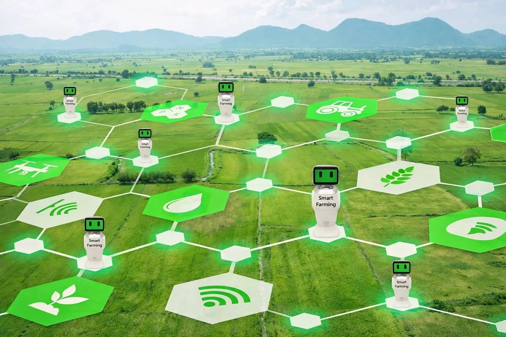
FieldPlanning
- Planificación de muestreo por zonas Planejamento de amostragem por zonas
- Diseño de rutas optimizadas Design de rotas otimizadas
- Cálculo automático de puntos cLHS Cálculo automático de pontos cLHS
- Exportación a dispositivos de campo Exportação para dispositivos de campo
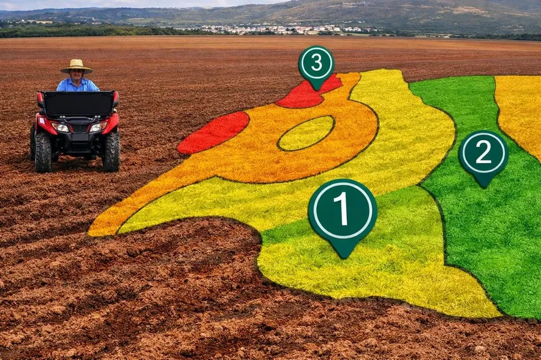
FieldMetrics
- Índices de vegetación multibanda Índices de vegetação multibanda
- Series temporales automáticas Séries temporais automáticas
- Estadísticas zonales por lote Estatísticas zonais por lote
- Detección de anomalías con IA Detecção de anomalias com IA
FieldControl
- Prescripción VRT automática Prescrição VRT automática
- Mapas de aplicación por insumo Mapas de aplicação por insumo
- Compatibilidad ISOBUS/Shapefile Compatibilidade ISOBUS/Shapefile
- Reportes de costos por hectárea Relatórios de custos por hectare
Galería Galeria
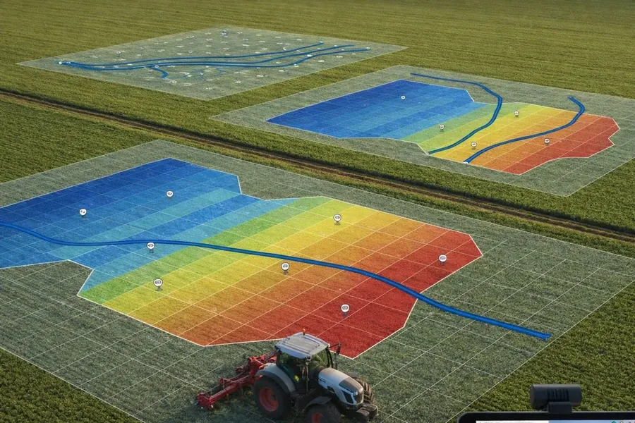
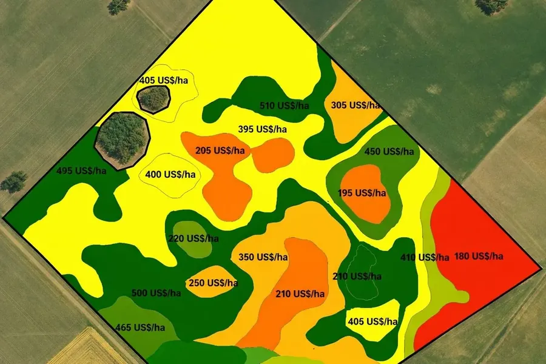
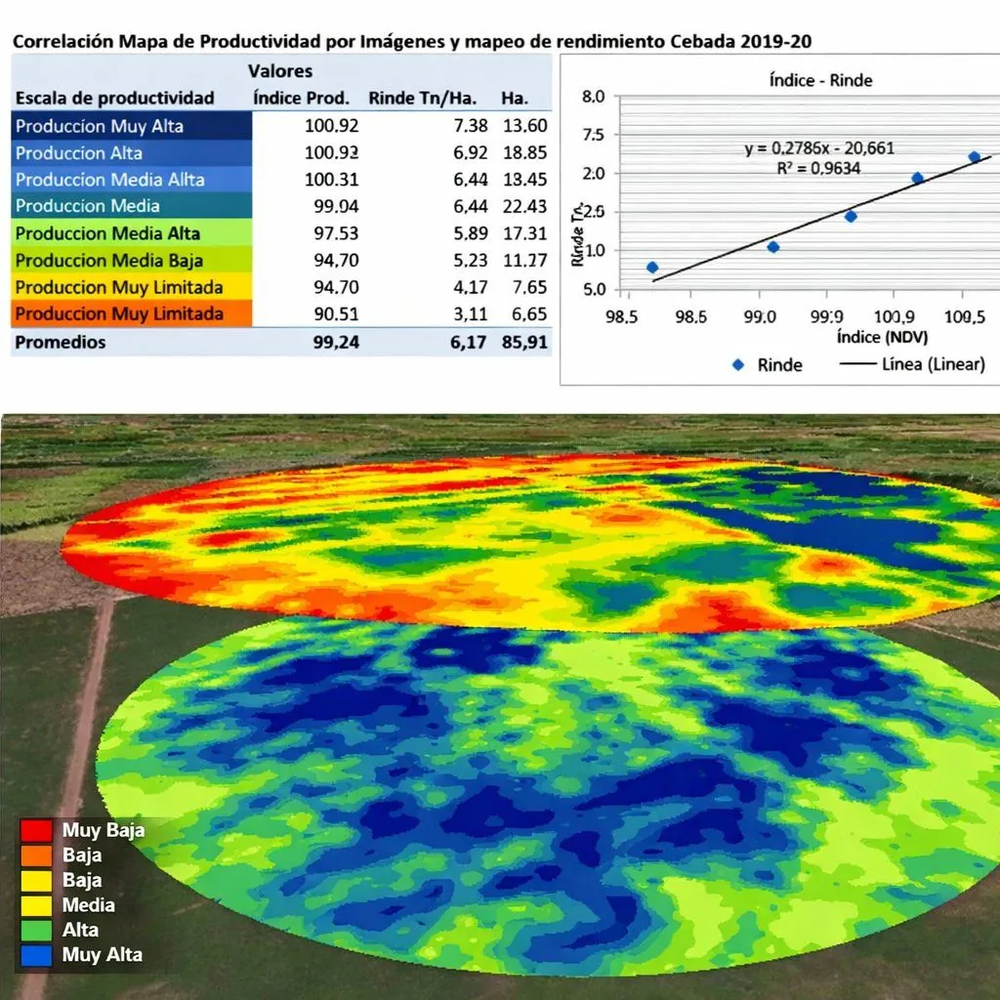
Preguntas Frecuentes Perguntas Frequentes
Lo que productores y agrónomos nos preguntan más O que produtores e agrônomos mais nos perguntam
¿Qué es la agricultura de precisión?O que é agricultura de precisão?
Es un sistema de manejo agrícola que usa datos satelitales, sensores, GPS e IA para tomar decisiones sitio-específicas. El resultado típico: 20-40% menos insumos y 10-25% más productividad.É um sistema de manejo agrícola que usa dados satelitais, sensores, GPS e IA para decisões sítio-específicas. Resultado típico: 20-40% menos insumos e 10-25% mais produtividade.
¿En qué cultivos trabajan?Em quais cultivos trabalham?
11 cultivos: caña de azúcar, soja, maíz, sorgo, girasol, chía, tomate, pimentón, papa, maracuyá y palta — con calibraciones específicas por etapa fenológica.11 cultivos: cana-de-açúcar, soja, milho, sorgo, girassol, chia, tomate, pimentão, batata, maracujá e abacate — com calibrações específicas por estádio fenológico.
¿Qué satélites utilizan?Quais satélites utilizam?
Sentinel-2 (10m, 5 días), Landsat 8/9 (30m, 16 días) y Planet (3m, diario). Procesamos en Google Earth Engine con 20+ índices espectrales (NDVI, NDRE, EVI, NDMI, MTCI...).Sentinel-2 (10m, 5 dias), Landsat 8/9 (30m, 16 dias) e Planet (3m, diário). Processamos no Google Earth Engine com 20+ índices espectrais.
¿Cómo funciona la prescripción variable VRT?Como funciona a prescrição variável VRT?
Generamos mapas en formato shapefile o ISOBUS compatibles con maquinaria John Deere, Case, Massey, AGCO y Trimble. Cada zona recibe la dosis óptima de N, P, K, cal o yeso según su análisis.Geramos mapas em shapefile ou ISOBUS compatíveis com John Deere, Case, Massey, AGCO e Trimble. Cada zona recebe a dose ótima de N, P, K, calcário ou gesso conforme sua análise.
¿Qué precisión GPS tienen los muestreos?Qual a precisão GPS das amostragens?
GPS con filtro Kalman y precisión submétrica (±50 cm) en la app PIX Muestreo. Cada punto se valida contra la zona de manejo planificada antes de confirmar la colecta.GPS com filtro Kalman e precisão submétrica (±50 cm) no app PIX Muestreo. Cada ponto é validado contra a zona de manejo planejada antes de confirmar a coleta.
¿Puedo usar mi propio laboratorio?Posso usar meu próprio laboratório?
Sí. Aceptamos resultados de cualquier laboratorio en CSV o PDF. También integramos directamente con IBRA megalab y otros laboratorios brasileños y bolivianos.Sim. Aceitamos resultados de qualquer laboratório em CSV ou PDF. Também integramos diretamente com IBRA megalab e outros laboratórios brasileiros e bolivianos.
¿Cuánto demora el primer informe?Quanto demora o primeiro relatório?
Diagnóstico satelital inicial: 48-72h. Informe completo de fertilidad con prescripción VRT: 7-14 días según tiempos de laboratorio.Diagnóstico satelital inicial: 48-72h. Relatório completo de fertilidade com prescrição VRT: 7-14 dias conforme tempos do laboratório.
¿Las biofábricas on-farm son rentables?As biofábricas on-farm são rentáveis?
Sí. Producir Trichoderma, Bacillus, Beauveria o Metarhizium en finca cuesta 5-10× menos que comprarlo, con calidad equivalente bajo nuestros protocolos. Payback típico: 1 zafra para fincas >500 ha.Sim. Produzir Trichoderma, Bacillus, Beauveria ou Metarhizium na fazenda custa 5-10× menos que comprar, com qualidade equivalente sob nossos protocolos. Payback típico: 1 safra para fazendas >500 ha.
¿Trabajan con drones?Trabalham com drones?
Sí — detección de malezas con IA, conteo de plantas, restitución de líneas en caña y mapeo altimétrico ALOS/SRTM. Compatible con DJI Mavic, Phantom, Matrice y P4 Multispectral.Sim — detecção de plantas daninhas com IA, contagem de plantas, restituição de linhas em cana e mapeamento altimétrico ALOS/SRTM. Compatível com DJI Mavic, Phantom, Matrice e P4 Multispectral.
¿Cuál es el área mínima para contratar?Qual a área mínima para contratar?
No hay mínimo técnico, pero el ROI típico se materializa desde 50 ha. Para áreas menores recomendamos empezar con un diagnóstico satelital sin compromiso.Não há mínimo técnico, mas o ROI típico se materializa a partir de 50 ha. Para áreas menores recomendamos começar com um diagnóstico satelital sem compromisso.
¿Mis datos están seguros?Meus dados estão seguros?
Sí. Cifrado HTTPS (TLS 1.3), CSP, autenticación 2FA, mínimo privilegio. Cumplimos LGPD (Brasil) y Ley 1581 de protección de datos. Tus datos georreferenciados son tuyos — los usamos solo para prestar el servicio contratado.Sim. Criptografia HTTPS (TLS 1.3), CSP, autenticação 2FA, mínimo privilégio. Cumprimos LGPD (Brasil) e leis de proteção de dados. Seus dados georreferenciados são seus — os usamos apenas para prestar o serviço contratado.
¿Aceptan pagos en BRL/BOB/USD?Aceitam pagamentos em BRL/BOB/USD?
Sí — transferencia bancaria (BOB, BRL, USD), tarjeta de crédito y criptomonedas (USDT, USDC). Facturación conforme a leyes fiscales bolivianas y brasileñas.Sim — transferência bancária (BOB, BRL, USD), cartão de crédito e criptomoedas (USDT, USDC). Faturamento conforme leis fiscais bolivianas e brasileiras.
Calculadora de ROI Calculadora de ROI
Estima cuánto puedes ahorrar con prescripción variable VRT en tu operación Estime quanto você pode economizar com prescrição variável VRT na sua operação
Estimación conservadora basada en 25% reducción de insumos y 12% aumento de productividad. Resultados reales varían según cultivo, clima e implementación. Estimativa conservadora baseada em 25% redução de insumos e 12% aumento de produtividade. Resultados reais variam conforme cultivo, clima e implementação.
Nuestras Aplicaciones Nossas Aplicações
Herramientas digitales diseñadas para el trabajo de campo y la gestión agronómica Ferramentas digitais projetadas para o trabalho de campo e a gestão agronômica
PIX Admin
Panel de control para gestión de proyectos agrícolas, generación de informes PDF, visualización de mapas y administración de datos agronómicos. Painel de controle para gestão de projetos agrícolas, geração de relatórios PDF, visualização de mapas e administração de dados agronômicos.
Acceso interno Acesso internoPIX Muestreo
Aplicación de campo para colecta georreferenciada de muestras de suelo. Navegación GPS a puntos de muestreo, registro fotográfico y sincronización offline. Aplicação de campo para coleta georreferenciada de amostras de solo. Navegação GPS a pontos de amostragem, registro fotográfico e sincronização offline.
Acceso interno Acesso interno"Medir para comprender, controlar para mejorar" "Medir para compreender, controlar para melhorar"
Comienza a transformar tu operación agrícola con tecnología de precisión Comece a transformar sua operação agrícola com tecnologia de precisão
Contacto Contato
Santa Cruz, Bolivia | Brasil